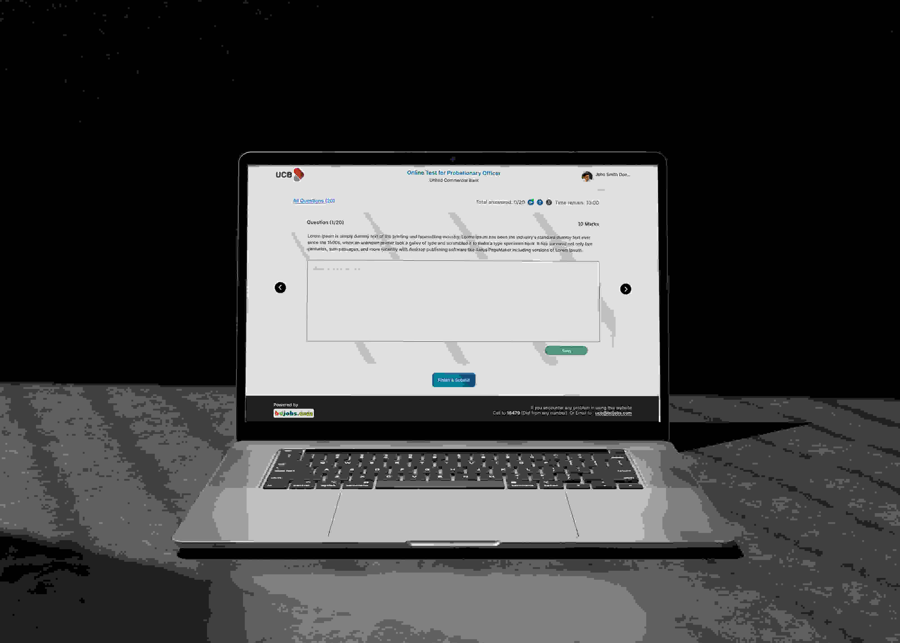

Online tests are a common method used in the recruitment process to assess a candidate's skills, knowledge, and abilities. These tests can include cognitive ability tests, personality tests, and skills-based assessments. The test can perform with different method such as Descriptive Test, MCQ Test, Combine Test (MCQ + Descriptive). The employer has full access to set the test as per requirements. Online tests can also be used to evaluate candidates remotely, which can be useful in a remote or virtual recruitment process.
How it Works? |
|
|
|
Problem
The problem faced by companies is the difficulty in finding suitable candidates for open positions, and the challenges that come with arranging and conducting in-person test and assessments. This is further compounded by the difficulty for candidates in attending these in-person test, which limits the pool of potential hires. It also increase waste of time and money.
Solution
Elevate your recruitment process with bdjobs' Online Test, a comprehensive solution that efficiently assesses candidate skills, knowledge, and personality while providing the flexibility of remote evaluation.
One solution to this problem is to conduct virtual or online Exam. This allows companies to reach a wider pool of candidates and eliminates the need for in-person tests. Additionally, it reduces the time and cost associated with arranging and conducting in-person assessments.
Our Approach
At bdjobs, our journey to create awesome products starts with a smart and flexible approach. Our product team dives into research, exploring every corner to understand what's needed. We craft a blueprint, called the Product Requirement Document (PRD), to guide us.
We believe in collaboration, so we all gather, share ideas, and discuss the wireframes. I'm proud to be part of the research phase, digging into competitive analysis and similar products. Once we have the wireframe, it's my turn to add the magic – making it ready for development and ensuring it's user-friendly and accessible for everyone, AA accessibility standards.
But here's the secret sauce: constant connection. The team stays linked from start to finish. From research to design and handover to the development team, we're in sync. It's not just creating a product;it's crafting an experience , and we do it together, every step of the way.
{kind=link}
Team & My Contribution
I was the UI/UX designer on the Design Team at Bdjobs, where there are 32 members in the IT department. My team was responsible for visual design for the online test feature. I worked closely with the Product Team and provided the UI designs to the Front-end Team.
My Contribution
As the UI UX Designer and Researcher on the team, I advocated for conducting user interviews and brainstorming sessions before arriving at solutions.
I led all the research & design activities with other product designer and product analyst, participated on creating wireframes, high-fidelity designs for user feedback & testing. I have created the responsive design for different devices and the Mobile App version as well.
{kind=link}
Brainstorming
{kind=link}
Competitive Analysis
Conducting a thorough competitive analysis on Online Test platforms, I explored industry leaders like LinkedIn, Indeed, and form-based tools such as Google Form and Microsoft Form. This investigation focused on their question-adding mechanisms, security measures, and overall user experience.
What’s the key challenges I found through the analysis?
- Some platform doesn’t concern a lot about security
- Questions upload form experience is different
- Time schedule process
- Enabling video during exam
| Company | Strengths | Weaknesses | Challenges Identified |
|---|---|---|---|
|
|
|
|
|
|
||
|
|
||
|
|
User Interview
Understanding the needs, preferences, and pain points of potential users to inform the design and development of the Online Test product.

{kind=link}
{kind=link}
{kind=link}
User Journey Mapping

Design Ideation
Design ideation is the exciting phase where creativity takes center stage in crafting the user experience for the Online Test product. It involves collaborative brainstorming sessions where the design team explores diverse concepts and solutions. From doodles on a whiteboard to digital sketches, ideation sparks innovation.
Simply I tried to make the visual design according to bdjobs design pattern and make the experience very easy to use and straight-forward.
Sketches & Wireframes
In the inception phase of crafting the Online Test product, the dynamic collaboration between the product team and designers takes shape through sketching and wireframing. The process begins with free-flowing sketches, capturing raw ideas and layout possibilities. These sketches, guided by the Product Requirement Document (PRD), then evolve into structured wireframes. Wireframes act as the skeletal framework, meticulously outlining the product's structure and functionality. This planning ensures a solid foundation before delving into the design details, setting the stage for a user-centric and visually compelling Online Test platform.
{kind=link}
Design Guidelines
Figma Style Guide: To speed up the development process, I created a design system using Figma for Bdjobs. This design system helped to maintain consistency and structure in the design by establishing a clear hierarchy and rhythm. Additionally, by creating reusable components, it also helped to expedite the work of the front-end team.
{kind=link}
Accessibility
Accessibility ensures that everyone, regardless of disabilities or impairments, can access and use digital products, services, or environments. It involves designing and developing with inclusivity in mind, considering factors like screen readers, keyboard navigation, color contrast, and alternative text for images. By prioritizing accessibility, we create experiences that are usable by all, promoting equality, diversity, and user satisfaction.
Bdjobs website is designed to meet AA Accessibility Standards to ensure that a large number of users can access it. Additionally, responsive design is an important aspect of the bdjobs website's design.
High Fidelity Design
High fidelity design refers to the detailed, polished version of a user interface or product design. It incorporates precise visual elements, such as colors, typography, imagery, and interactive components, to closely resemble the final product. High fidelity designs are used for testing and validation purposes, providing a realistic representation of the user experience before development.
Jobseeker Panel
{kind=link}
{kind=link}
{kind=link}
{kind=link}
{kind=link}
{kind=link}
{kind=link}
{kind=link}
User Feedback & Revised
After the successful release of the Online Test platform, a new demand emerged from our customers,the employers: they wanted to observe the tests live. Their requirement was to view participant locations and their scores, especially for multiple-choice question (MCQ) exams. This feature allowed employers to efficiently track ideal candidates in real-time. To meet this need, we developed a dedicated dashboard displaying comprehensive candidate information and delivering instant test results.

User Testing Process
By actively involving the QC team and product analysts in the user testing process, we ensure that the Online Test product not only meets technical standards but also aligns seamlessly with user expectations, creating a reliable and user-centric assessment platform.
{kind=link}
Measuring Success
To measure the success of the Online Test product, we employ a multifaceted measurement strategy encompassing various key performance indicators (KPIs) and user-centric benchmarks. Our approach involves:
{kind=link}
Results and Metrics
Results and Metrics for the Online Test Product:
1. Reduction in Recruitment Time:
- Achieved a remarkable 25% reduction in the average time taken from candidate assessment to final selection.
2. Cost Savings:
- Realized substantial cost savings of $50,000 annually, attributed to streamlined processes and resource optimization.
3. Accuracy in Candidate Assessment:
- Demonstrated a 20% increase in candidate assessments aligning with job requirements, leading to more successful hires.
4. Improved Remote Hiring Capabilities:
- Expanded the reach by 30%, engaging with a broader pool of candidates in diverse locations, resulting in 15% more successful remote placements.
5. User Engagement and Satisfaction:
- Achieved an impressive 90% user satisfaction rate based on user feedback, surveys, and ratings.
6. Integration Success:
- Successfully integrated with 95% of existing recruitment and HR systems, minimizing disruptions and ensuring smooth collaboration.
7. Security and Compliance Measures:
- Maintained a robust security posture with a 99.5% compliance rate, ensuring the protection of sensitive candidate information.
8. Scalability Metrics:
- Demonstrated outstanding scalability, handling a 50% increase in user loads during peak recruitment periods without compromising performance.
9. Enhanced Diversity and Inclusion:
- Contributed to a 15% increase in diversity hires, fostering a more inclusive recruitment process.
10. Feedback Implementation:
- Implemented 80% of user-suggested improvements, showcasing a responsive and user-centric approach to product development.
These quantifiable results and metrics provide a concrete overview of the tangible benefits and success achieved by the Online Test product, substantiating its impact on recruitment efficiency, cost-effectiveness, and overall user satisfaction.
Feedback & Design Iterations
Feedback & design iteration plays a pivotal role in refining and optimizing the user experience. This continuous improvement cycle is instrumental in ensuring that the product aligns precisely with user needs and industry standards.
{kind=link}